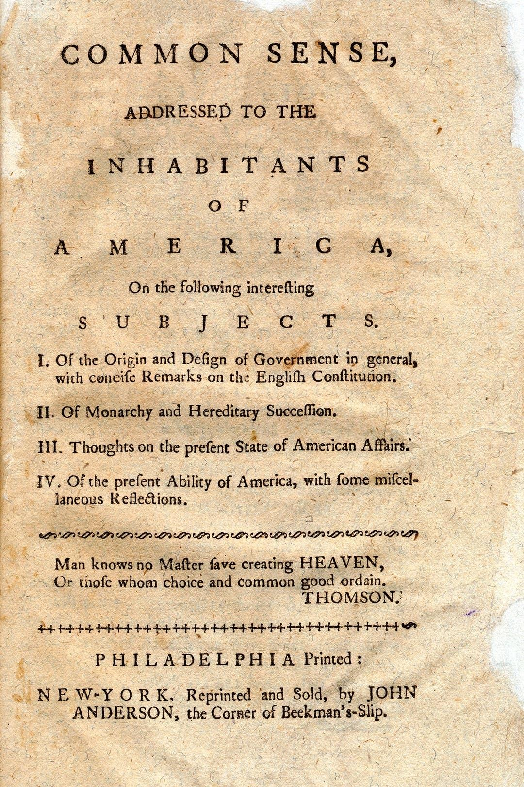
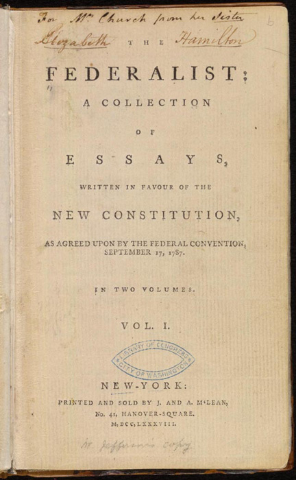
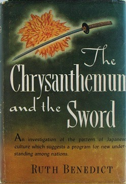

3. 他山之石：托克维尔眼中的美国
大家好，我是杨照。我们继续来为大家介绍托克维尔的《论美国的民主》。
《论美国的民主》观点就是，这是大型的政治试验，长期的政治试验。而美国政治试验的正式起点，是1776年的革命。
思考革命的载体：雄辩的小册子
美国革命不只是武装反抗英国殖民政策，进而脱离英国统治而已；在反抗之前，以及反抗成功之后几十年的时间内，不断持续有各种思考、各种理念的讨论。美国革命，先是一场思考革命，然后才是行动革命。
承载美国革命思考跟理念的重要工具是pamphlets，我们一般称之为“小册子”。这是当时在英国、法国流行，后来传到北美殖民地的一种大众传播形式。那时候的媒体没那么发达，不要说没有广播、电视，就连报纸的发行量都不大，传播的幅面也都不广。因而小册子（pamphlets）就变成了最有效的宣传工具。当时的人想要宣传、鼓吹什么，只要是需要接触、动员陌生群众的，他们的第一个反应，那就是：去写一本小册子（pamphlet）。
小册子通常都是用煽动的语言，近似讲稿的方式写成的，要让识字、能够读得懂的人，可以直接地将内容念给不识字的人听，甚至可以聚众大声地朗读，来扩散、放大影响力。小册子的字数不多，但也绝对不是填上几句标语口号就能解决的，里面要装有雄辩滔滔的内容，才能够吸引人来读、来朗诵。所以，小册子通常一方面要有可以挑激情绪的种种事实例证，另一方面也要有清晰醒目的观念贯串其间。这个人写了一本小册子，引发注意，于是就会有同意他、支持他的人，仿效再写一本小册子，也会有人写小册子反对他、批判他。小册子既是观念流通的管道，也是辩论吵架的场域。
我们可以在潘恩（Thomas Paine）他所留下的著作当中，看到这种小册子的内容。潘恩他主张美国革命的小册子，例如最有名的是《常识》系列和《美利坚的危机》系列，在当时流传很广，对北美殖民地下定决心要追求独立于英国，发挥了很大的作用。
不过，读Thomas Paine，我们心里要有补充的理解。Thomas Paine他写的小册子不是单独存在的，而是当时数以百计畅销小册子当中的一部分。有Thomas Paine这种鼓吹独立革命的小册子，也就会有保护英国殖民利益，还有支持王权立场的小册子，彼此叫嚣吵架，争取读者跟听众的注意。这些小册子加在一起，创造了18世纪珍贵的政治启蒙潮流。借由小册子的强大感染力，使得许多人意识到政治制度的选择，思考了王权制度和民主制度的利弊得失。这是我们今天理解美国民主的一项重要历史材料。

《常识》（Common Sense），托马斯·潘恩（Thomas Paine）著
图源网络
另外还有一份同样的材料，是The Federalist Papers，一般称之为《联邦论》或《联邦党人论》。这是由汉密尔顿（Alexander Hamilton）、麦迪逊（James Madison）和约翰·杰伊（John Jay）他们三个人合写的八十五篇文章，那是要意图说服各州同意签署联邦的宪法。这批文章对于为何要成立“联邦”，这种人类历史上空前的民主联邦制度到底有什么样的意义，还有联邦制度会如何运作，联邦制度底下的政治生活会有什么样的特色，都做了深入、详细的说明。
借由The Federalist Papers的鼓吹，联邦宪法通过了，十三个州正式组成了一个国家，也给予了这个新成立的国家一套完整的政治理念，还有一份独特的历史使命。

《联邦党人论》（The Federalist Papers）初版扉页
图源网络
他者的洞见：《论美国的民主》和《菊与刀》
革命前后的小册子，还有《联邦党人论》，记录的都是“参与者”的观点和经验，在行文当中带有高度的迫切感、说服的热情，这是优点。当然，相对的缺点，那就是少了比较客观一点的分析，少了对于这样的一场革命带来的政治大改变，在美国以外其他地区是否具备普遍意义的讨论。
客观分析和普遍意义的讨论，那就是托克维尔《论美国的民主》这本书最大的贡献。
托克维尔他不是美国人，他是个法国人，而且他的书不是用英文写成的，是用法文写的，显然刚开始就是以法国读者作为他的对象。这原来是一本向法国人介绍美国革命、美国政治制度的书，是为一群对于美国没有什么认识的读者而写的书。托克维尔他当然没有打算要将这样的题材写给美国人看，更不会预期到他的书后来竟然吸引了这么多法国以外的读者，甚至包括了大批的美国读者。
如果预见到会有许多美国读者来读他的书，想从他的书里找到一条自我理解的管道，托克维尔当年也许就不见得写得出这样一本书来了。
在书籍的历史上，我们可以找到一个有趣的对照对比。那就是美国人类学家鲁思·本尼迪克特（Ruth Benedict）她曾经写过的《菊与刀》，那是一本分析日本文化的书。

《菊与刀》（The Chrysanthemum and The Sword），鲁思·本尼迪克特（Ruth Benedict）著
图源网络
Benedict她动笔写《菊与刀》的时候，一句日语都不懂，她也没有去过日本，更糟的是，她还不可能有机会去到日本做调查观察，因为那个时候，“珍珠港事变”刚发生，美国对日本宣战，两个国家处于敌对的战争状态中。
事实上，就是“珍珠港事变”，美国对日宣战，刺激了这本书《菊与刀》它的写作计划。出于战争需要，美国政府必须对于新的敌人——也就是日本——有所了解，以便作为拟定战争策略的参考。了解敌人的一种方式，那就是进行人类学式的文化研究，看看日本究竟是一种什么样的文化，日本人相信什么，日本人又会有什么样的基本价值态度。
Benedict她接受了委托，凭借着她对于“文化模式”的长期思考，设定了一套认识日本人、认识日本文化的问题。但她要到哪里去找日本人来让她问，来作为她的受访者（informant）呢？答案是到日侨集中营去。
美国对日宣战了之后，强制所有的在美日人，包括具有美国公民身份的，也包括日裔第二代的年轻人小孩，他们都不得在社会上自由活动，他们都被拘留在集中营里。没有学过一天日语，没有待过一天日本的Benedict，她就到集中营里和这些日裔美人相处，做她的田野调查，而写出了《菊与刀》这本书来。
如果不是处于战争非常状态，Ruth Benedict她不可能只靠这么有限的调查资料，就写一本分析日本文化的书。如果不是有迫切让美国人能够掌握敌人日本的基本面貌的需求，Ruth Benedict恐怕也不会那么快速写出一本书，又马上印刷出版。然而，这样的一本调查条件严重不足、迫于现实仓促完成的书，出版之后不只是影响了美国人对日本的认知，战争结束了之后，翻译成为日文，卖回日本，在日本成了畅销书，也影响了日本人的自我理解和自我认知。
而《菊与刀》最重要的，就是提出了Guilt Culture和Shame Culture这两种不同的文化态度中间的差异，认为日本最重要的，他们是笼罩在“耻文化”（Shame Culture）当中，而不是西方式的“罪文化”（Guilt Culture）。
Shame Culture和Guilt Culture，这是Ruth Benedict她用来帮助美国读者了解日本人的关键切入点。日本人没有原罪观念，却有强烈的集体评判，所以日本人做什么、不做什么，在意什么、不在意什么，主要并不是出自于内在的是非善恶信念，而是考虑外在周遭众人的眼光、意见。被发现做出了不合一般仪节的行为，在日本人的心中就会产生强烈的羞耻感。
Ruth Benedict的分析，半个世纪之后都还在影响日本人的自我形象讨论，这真的令人惊讶。
托克维尔的《论美国的民主》，和Ruth Benedict她的《菊与刀》类似之处，在于作者托克维尔和他分析描述的对象——美国——也没有那么亲近、密切的关系。
托克维尔比Ruth Benedict好一点，他写书之前到过美国，对美国有第一手的观察资历。好一点，但也没有好太多。托克维尔去美国的时候，他还不到二十六岁，前后在美国待了九个月时间，然后回到法国，几年之后写出了《论美国的民主》。比较一下我自己，我二十四岁去美国留学，然后在美国连续住了超过六年才回台湾，好像我会比托克维尔更有资格来写《论美国的民主》吧？
当然，这是玩笑话，托克维尔的书是在特定历史情景底下所产生的，历史情境就使得这本书能够在大西洋两岸都赢得众多的读者。那样的历史背景，和Ruth Benedict她的书是在第二次世界大战当中写作，然后在日本战败了、美国占领日本期间，这本书在日本流行的历史背景，这都是非常独特、无法复制的历史情境。
大革命的遗产：推不翻的文官系统
托克维尔在1805年7月29日出生在一个波旁王朝的贵族家庭，他的祖父还曾经拥有侯爵的头衔。不过托克维尔他出生的时候，情况当然大不相同了，因为已经经历了1789年的法国大革命。托克维尔在大革命之后十多年出生，大革命的翻天覆地变化都仍然在进行当中，大革命的记忆甚至都还来不及整理。
法国大革命根本上是一个反对贵族，要推翻贵族的革命。18世纪的法国王宫贵族，也实在享受了太多太夸张的特权，难怪引起中产阶级以下的人民那么强烈的不满。
法国大革命爆发前，法国也出现了大量的宣传小册子，不过和英国、美国的情况不太一样。
第一，法国的小册子几乎都是革命派写的，因为对手——法国贵族——自信又懒惰到不愿意也不会提笔来自我辩护。
第二，法国的小册子议论少，描述多，没有那么丰富的政治价值跟观念的讨论，而是充满了对于贵族富裕、淫乱生活的描述。如果有机会读到那些攻击法国贵族的小册子，我们之中很多人也有可能就会成为革命派吧！
小册子的内容和后来大革命的肃清，都让人留下印象，觉得法国旧政权的贵族享受特权、鱼肉乡民、荒淫无道，简直一无是处。这样的印象，不能说不对，但毕竟遗漏了革命前法国贵族的一些重要正面作为和贡献。最大贡献，在于他们长期是法国文官的骨干。法国是个高度中央集权的国家，很早就建立了庞大的官僚体系，取代地方封建势力，作为国家的管理者。
中国是另外一个传统的官僚大国，而中国官僚系统的人才，在唐朝之后，主要来自于科举考试。科举让不同地方、不同阶层的人都能够借由考试进入官僚体系。如此，一方面保持官僚体系的人才多元性质，另外一方面又提供了中央和边缘以及上下阶层间的流动机会。
法国没有科举考试，法国的官僚体系主要是靠贵族人才来填补的。官僚系统和贵族系统有着很高的重叠性，也就有着极为密切的关系。法国大革命当中，许多贵族被送上断头台，另外有许多贵族仓皇流亡，还有更多的贵族被边缘化，这样的变化也就意味着法国官僚系统的严重断层。革命委员会可以订定各种新制度，但没有人能够帮助他们落实去执行这些制度。
法国大革命发生了之后，接着有二三十年的大混乱、大动荡，这是其中一项重要的原因。二三十年中，掌权的革命分子来来去去，这个打倒那个，那个推翻这个，政权也随之换来换去。然而，在这些表面动荡下，一项底层的事实没有变，来不及变，那就是，法国这个国家如果要恢复正常运作，就不能没有称职的文官，也就不能不将那些旧贵族召回来，放在主要的文官位置上。
托克维尔他们家，就是这种旧贵族文官系统的成员。到托克维尔出生的时候，他的家族中有六七个成员已经是断头台下的阴魂了。然而在这个过程当中，贵族的身份渐渐褪色、淡出；相对地，专业文官的能力就越形突出了。
迷茫的旧贵族与新文官
托克维尔他就出生在这样的家庭，又在波旁王朝复辟的时代长大，很自然也就设定了以进入政府担任文官公务员来作为他主要的人生道路。不过，在他二十五岁的那一年，法国又来了一场翻天覆地的变化——复辟的波旁王朝再度被推翻，换成了路易·菲利上台掌权。
又来了！从1789年之后，法国已经遭遇过多少次的政治动荡和摆荡了？第一共和、第一帝国、波旁复辟、七月王朝等等，到底哪一条路才是法国应该走、能够走的路呢？而且这还不只是法国的问题，整个欧洲都在观望法国的走向，进而，整个欧洲都受到法国动荡、摆荡的牵连。法国就象征、代表了欧洲的未来。
就是这样非常特别的历史情境下，托克维尔出发去到美国。他的用意也就是，要看可以从美国和欧洲如此不同的政治社会发展当中得到什么样的启发，回过头来，来回答“法国的未来到底怎么走”这个当时的时代所给予这样一位年轻人必须思考的巨大问题。
感谢您的收听，我们下次再会。